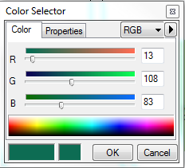

This page explains how to edit the sign plan mxd template to create the Preliminary Project Map, part 35% of the sign planning process.It follows adding new records to the signage Access database (http://oakland-bike-ped.wikispaces.com/Project+Map+-+Sign+Plan) and precedes exporting the map and editing it in Illustrator.
Overview
- Open \\oakland\pwa\Transportation\Bike-Ped_Program\GIS\signage\sign_plan-template.mxd in ArcMap and save a copy for the new corridor in its respective corridor folder
- The mxd template includes a north arrow, scale, and the signage layer with dots and labels symboloized. The instructions below explain how to do this, but it may not be needed for each project.
- You may need to insert the WayfindingDestinations_Points and Wayfinding_Destinations_Polygons layer from the master geodatabase and join to \\oakland\pwa\Transportation\Bike-Ped_Program\Design_Guidance-Oakland\3-Wayfinding-Guidance\Design_Guidelines\INDD\figure1-destinations.csv and the bikewaysnetwork layer from the Progdiso database and join to
\\oakland\pwa\Transportation\Bike-Ped_Program\GIS\data_share\Current-Geodatabase\Linked_Tables\OaklandBikewaySigns_current.xls. - Each mxd will have two layers to differentiate between the project under development and other signs.
- Signage layer dots and labels are grey (RGB values 178-178-178) and project sign dots and labels are green (RGB values 13-108-83). Color values can be changed using the Color Selector. Both dots and labels have a black outlines (0.5). Dots are size 4. Labels use 8pt Gil Sans MT in white.For projects with new regulatory or warning signs, see http://oakland-bike-ped.wikispaces.com/Style+Guide+for+Sign+Installation+Project+Map.
- The label creation process is detailed below as well as the final steps before exporting to Illustrator.

Create and symbolize
- Symbolize the signage layer using 4 pt grey dots.
- Make a copy of the signage layer that will be constrained to symbolize only the project (“project layer”.) Rename it intuitively (for you).
- Go to the Symbology tab of the project layer. In the left panel, select Categories, and Unique values.
- Find the project corridor by selecting “Corridor” in the value field and adding values. Symbolize only the project corridor using a 4 pt green dot.
Outline your corridor with a dotted line
- Select your corridor and make it a layer.
- Use the measure tool to find a good distance from your corridor for the outline
- Go to Geoprocessing > Buffer to select the buffer tool.
- Select you selection.
- Make a new name for your buffer.
- Put in the number of feet you decided using the measure tool.
- Select disolve all.
- Hit OK.
- Select the layer and symbolize as no fill and outline dashed 4:4 under the Esri Styleguide options.
- Copy the buffer to all data frames.
Label the signage layer
- Double-click on signage layer, and go to the Labels tab (Figure 1).
- Click checkbox for Label feature in this layer (Figure 1).
- Select Label all the features the same way (Figure 1).
- Click on the Expression button, and paste in the following: [signage.Id]& vbnewline& [SignMsgLine1]& vbnewline& [SignMsgLine2]& vbnewline& [SignMsgLine3]
- Click on Symbol, Edit symbol, Advanced text. Click the Text Background checkbox and click the Properties button.
- Select the first Balloon callouts and click the Symbol button (Figure 2).
- Select the grey fill color and a 0.5 outline width, black (Figure 3).
- Hit ok, and make sure this final dialog has the desired size, color, and font (Figure 4).
- Hit okay and your map should populate with grey callouts (Figure 5).
Label the project layer
This process is very similar to that for the signage layer. The differences are creation of a new class name, a SQL query, and the color of the sign lablels (green).
- Double-click on project layer, and go to the Labels tab (Figure 6).
- Select “Define classes of features and label each feature differently” (Figure 6).
- Define the class by clicking on the Add button and typing in a name. The name does not need to exactly match the corridor name in the database.
- Click the SQL Query button. Paste in the following, substituting the corridor name from the database for YOUR CORRIDOR (Figure 7)
Corridor = ‘YOUR CORRIDOR’ AND SignType = 'Confirmation' OR Corridor = ‘YOUR CORRIDOR’ AND SignType = 'Decision' OR Corridor = ‘YOUR CORRIDOR’ AND SignType = 'Turn'
Follow steps 4-9 above from the signage layer labeling above (except use green).
Sign Label Placement Tips
For Tips on how to change the placement of your sign labels, go to the following wiki:
http://oakland-bike-ped.wikispaces.com/Label+Placement+Tips
Set up viewports, extents, and rotation
- Once the labeling is completed, zoom to the project corridor.
- Think about how best to show the corridor on one 11 x 17 sheet. This may involve creating two (or more) viewports; consult other similar project maps for ideas.
- NEED TO ADD SOMETHING ABOUT COMMONLY USED SCALE FOR THIS MAP.
- To adjust the rotation, right click thde data frame and select ‘Properties‘.
- In the 'General’ tab in the Data Frame Properties window and near the bottom, change the value of ‘Rotation’
- The template is labeled based on the OaklandStreets layer, but this can be changed if desired.
- Once the map layout is complete, export to Illustrator; http://oakland-bike-ped.wikispaces.com/Project+Map+-+Sign+Plan#x--Export Map to Illustrator.